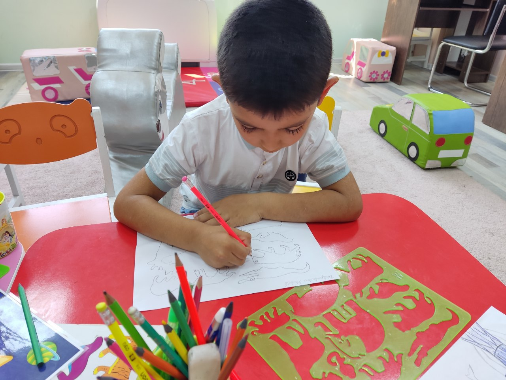
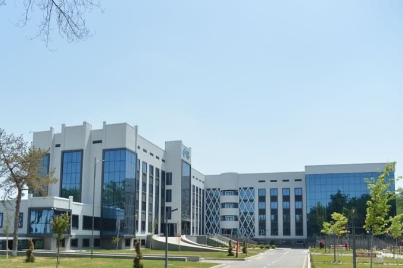

MI 23/4 -gruh talabasi Doniyeva Yulduzning Inklyuziv fanidan tayyorlagan mustaqil ishi
Reja:
1 : Inklyuziv ta’lim
2 : Uyda ta’lim
3 : “Mehrli maktab” konsepti
Inklyuziv ta’lim:
Mohiyati:
Inklyuziv ta’lim — bu barcha bolalarga, jumladan jismoniy, aqliy yoki sensory muammolari bo‘lgan bolalarga ham umumiy
ta’lim muassasasida, imkoniyatlari va ehtiyojlari inobatga olingan holda, teng huquqli ta’lim olish imkonini beruvchi
tizimdir.
Huquqiy-me’yoriy asoslari:
Masalan, PQ‑4860-sonli qarorda “Alohida ta’lim ehtiyojlari bo‘lgan bolalarga ta’lim-tarbiya berish tizimini yanada
takomillashtirish chora-tadbirlari” belgilangan.
Maktablarda inklyuziv sinflar ochilishi, boshqaruv va metodik qo‘llab-quvvatlash tartiblari ham hujjatlarda
belgilangan.

Asosiy tamoyillar:
Teng imkoniyatlar tamoyili — har bir bola, alohida ehtiyojlari bo‘lsin-yo‘q, sifatli ta’limga ega bo‘lishi lozim.
Individual yondashuv — bolaning maxsus ehtiyojlari, qobiliyatlari, holati inobatga olinadi.
Hamkorlik va qo‘llab-quvvatlash — o‘qituvchilar, maxsus pedagoglar, ota-onalar, psixologlar birga ish yuritishi zarur.
Amaliy jihatlari:
Maktablarda to‘siksiz muhit yaratish: masalan rampalar, mos jihozlar, sinfning moslashuvchanligi.
O‘qituvchilar va maktab xodimlari inklyuziv ta’limga oid tayyorgarlikka ega bo‘lishi lozim.
Jamiyat – maktab – oila tizimida hamkorlikni kuchaytirish.
Uyda ta'lim :
Tushuncha:
Uyda ta’lim — oila sharoitida yoki maktab tashqarisida bolaga ta’lim berish jarayonini bildiradi, ayniqsa
alohida
ehtiyojlari bo‘lgan bolalar uchun qo‘llanadi.
Bu holatda oila, pedagog, qo‘llab-quvvatlovchi xizmatlar — hammasi birga ishlashi kerak.
Muhum jixatlari:
Bolaning ijtimoiy moslashuvi va rivojlanishi uchun uyda ta’lim olsada, jamoa bilan aloqalar, integratsiya
imkoniyatlari
ko‘zda tutiladi.
Uy sharoitida ta’lim oluvchi bolaga maxsus pedagogik-psixologik qo‘llab-quvvatlash zarur.
“Mehrli maktab” konsepti:
“Mehrli maktab” — bu o‘qitish jarayonida bolalarning rivojlanishiga, ijtimoiy
moslashuviga, emotsional xavfsizligiga
yo‘naltirilgan muhit sifatida ta’riflanadi.
Bu maktablarda himoyalovchi pedagogik tartib joriy etiladi: ya’ni bolalarning psixologik va emotsional
xavfsizligi
ta’minlanadi, hamkorlik asosida o‘qitish bo‘ladi.
Pedagogik tartip va hamkorlik
Himoyalovchi pedagogik tartib — bolaning o‘zini erkin his qilishi, xavfsiz muhitda o‘qishi uchun ta’lim jarayonida
qo‘llaniladigan yondashuvlar.
Hamkorlik — o‘qituvchi, psixolog, maxsus pedagog, ota-ona va boshqa manfaatdor tomonlar bilan birga ta’lim-tarbiya
jarayonini tashkil etish.
Nega zarur
Imkoniyati cheklangan bolalar uchun faqat maktabdagi dars emas — ijtimoiy ko‘nikmalar, jamoadagi aloqalar, hissiy-ruhiy
holat ham muhim. “Mehrli maktab” bu jihatlarga alohida e’tibor beradi.
Uyda ta’lim, maktabdagi inklyuziv sinflar bilan birga — maktabga yaqinlik, muhitga moslashuv, jamiyatga integratsiya
imkonini oshiradi.
xulosa
Inklyuziv ta’lim, uyda ta’lim va “Mehrli maktab” konseptlari bir-birini to‘ldiradigan yondashuvlardir: barcha bolalar
uchun teng ta’lim imkoniyatini yaratish, ularni jamiyatga faol qo‘shish, rivojlanishida xavfsiz va qo‘llab-quvvatlovchi
muhit tashkil etish.
Bunda pedagogik tartib (ya’ni reja, metodika, muhit), hamkorlik (pedagog–ota-ona–mutaxassislar), va moslashuvchanlik
(bolaning holatiga mos usullar) muhim rol o‘ynaydi.
O‘zingiz uchun tayyorlayotgan mavzu bo‘yicha ushbu elementlarni alohida ajratib, har biri uchun amaliy maslahatlar va
rasmlar bilan boyitish foydali bo‘ladi.